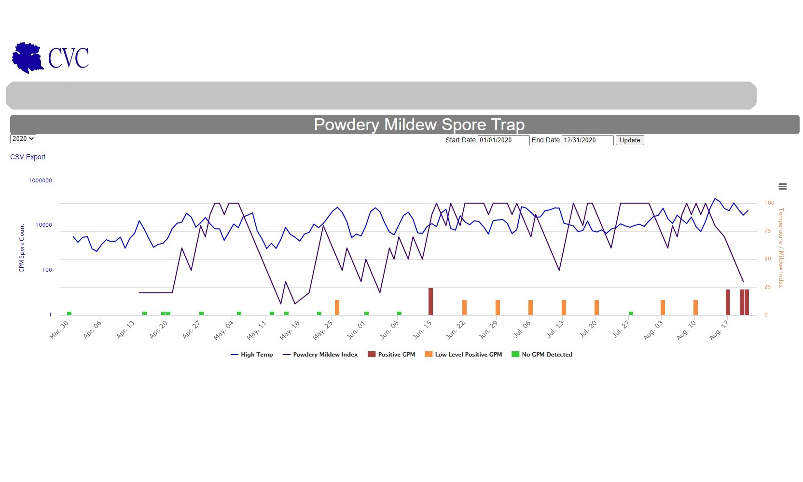
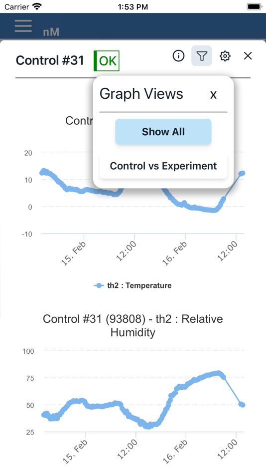

Mauricio Macias
777 Partners
777 Partners is an American private investment company based in Miami. The company was founded in 2015 and focuses on seven core industries: insurance, aviation, sports, media and entertainment, fintech, litigation finance, private credit, and sustainability.
Coastal Viticultural Consultants
Coastal Viticultural Consultants manages, builds, and consults on world-class vineyards. Leading the industry in vineyard technology. Deploys both real-time and periodic vineyard measurements. Detect Grape Powdery Mildew spores in your vineyard BEFORE an infection occurs. It provides growers with the information needed to improve your spray program's efficiency and effectiveness.
Neatmon
Neatmon is manufacturer of automated control and monitoring devices and equipment to provide more flexible monitoring solutions for the agricultural and industrial markets.
SympToDialog
SympToDialog is an AI-powered chatbot designed to simulate patient interactions during medical appointments. It offers a diverse range of personas with factors such as age, sexual orientation, ethnicity, cultural background, sexual behavior, geographic location, and biological factors.